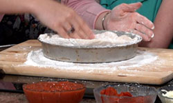

Chicago Style Pizza Recipe
Chicago-style pizza, or deep dish pizza contains a crust which is formed up the sides of a deep dish pan. It reverses the order of ingredients, using crust, cheese, filling, then sauce on top. Some versions (usually referred to as "stuffed") have two layers of crust with the sauce on top. Deep dish pizza was purportedly invented and first served in 1943 at Pizzeria Uno, which is still operating along with its twin restaurant, Pizzeria Due, in the River North neighborhood.
Ingredients Required
DOUGH:
- 1 Package active dry yeast
- 2 teas. Sugar
- 1 1/4 cups Warm water
- 2 3/4 cups All−purpose flour
- 1/2 cup yellow cornmeal
- 3 tbls. Olive oil
- 1 teas. Salt
TOPPING:
- 1 cup Pizza sauce
- 12 oz. Shredded mozzarella cheese
- 1/2 lb. Ground beef, crumbled, cooked
- 1/4 lb. Italian Sausage, crumbled, cooked
- 1/4 lb. Pork Sausage, crumbled, cooked
- 1/2 cup Pepperoni, diced
- 1/2 cup Canadian bacon, diced
- 1/2 cup Ham, diced
- 1/4 lb. Mushrooms, sliced
- 1 small Onion, sliced
- 1 Green bell pepper, seeded, sliced
- 2 oz. Grated Parmesan cheese
Step by Step Procedure
- For dough, sprinkle yeast and sugar into warm water in small bowl; allow stand until foamy, about 5 minutes.
- Mix flour, cornmeal, oil and salt in a large bowl; make a well in the center and add yeast mixture.
- Stir to form a soft dough, adding more flour if necessary.
- Turn onto a floured board and knead until dough is supple and elastic, 7 to 10 minutes.
- Transfer to a large bowl, cover and let rise in a warm spot until dough has doubled, about 1 hour.
- Punch down dough.
- On a lightly floured surface, roll dough to a 13-inch circle.
- Transfer to an oiled 12−inch pizza pan, folding the excess over to make a small rim.
- Spread with pizza sauce; sprinkle with all but a handful of the mozzarella cheese.
- Sprinkle with meats and vegetables.
- Top with remaining mozzarella and Parmesan cheese.
- Let rise in a warm spot about 25 minutes.
- Heat oven to 475 degrees.
- Bake pizza until crust is golden, about 25 minutes.
- Let stand 5 minutes before slicing.
|

Nutritional Facts
| Calories: |
570 |
| Total Fat: |
20g |
| Sugars: |
8g |
| Total Carbs: |
69g |
| Cholesterol: |
40mg |
|